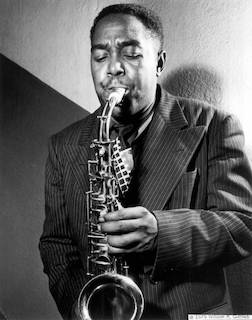
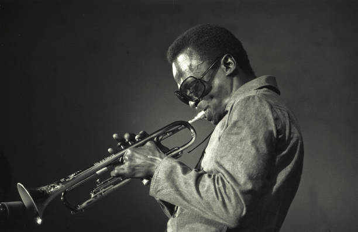
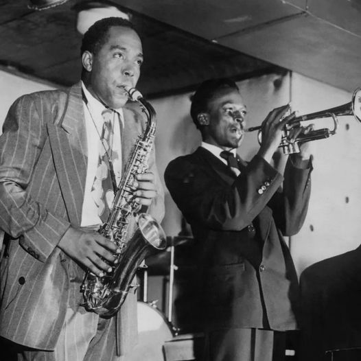
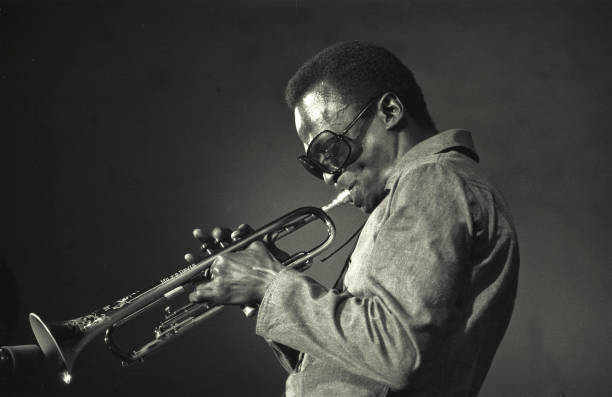
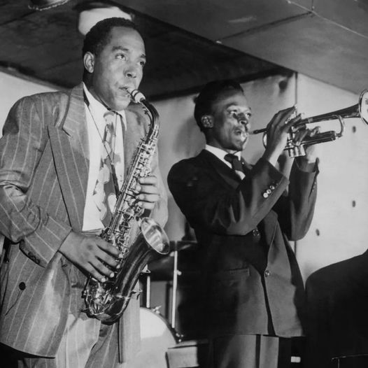

Let the rhythm of jazz take you away.
Jazz
Jazz, a genre born in New Orleans, blends African rhythms, European harmonies, and improvisation. Its history spans early jazz (Louis Armstrong), bebop (Charlie Parker), and contemporary styles (Miles Davis). Jazz features syncopation, ensemble playing, and original timbres. From swing to fusion, it remains a dynamic force in music.
Charlie Parker
Charles Parker Jr. (August 29, 1920 – March 12, 1955), nicknamed "Bird" or "Yardbird", was an American jazz saxophonist, band leader, and composer.[1] Parker was a highly influential soloist and leading figure in the development of bebop,[2] a form of jazz characterized by fast tempos, virtuosic technique, and advanced harmonies. He was a virtuoso and introduced revolutionary rhythmic and harmonic ideas into jazz, including rapid passing chords, new variants of altered chords, and chord substitutions. Primarily a player of the alto saxophone, Parker's tone ranged from clean and penetrating to sweet and somber. Parker acquired the nickname "Yardbird" early in his career while on the road with Jay McShann.[3] This, and the shortened form "Bird", continued to be used for the rest of his life, inspiring the titles of a number of Parker compositions, such as "Yardbird Suite", "Ornithology", "Bird Gets the Worm", and "Bird of Paradise". Parker was an icon for the hipster subculture and later the Beat Generation, personifying the jazz musician as an uncompromising artist and intellectual rather than just an entertainer.
more infoMiles Davis
Miles Dewey Davis III (May 26, 1926 – September 28, 1991) was an American jazz trumpeter, bandleader, and composer. He is among the most influential and acclaimed figures in the history of jazz and 20th-century music. Davis adopted a variety of musical directions in a roughly five-decade career that kept him at the forefront of many major stylistic developments in jazz.[1] Born into a upper-middle-class[2] family in Alton, Illinois, and raised in East St. Louis, Davis started on the trumpet in his early teens. He left to study at Juilliard in New York City, before dropping out and making his professional debut as a member of saxophonist Charlie Parker's bebop quintet from 1944 to 1948. Shortly after, he recorded the Birth of the Cool sessions for Capitol Records, which were instrumental to the development of cool jazz. In the early 1950s, Davis recorded some of the earliest hard bop music while on Prestige Records but did so haphazardly due to a heroin addiction. After a widely acclaimed comeback performance at the Newport Jazz Festival, he signed a long-term contract with Columbia Records, and recorded the album 'Round About Midnight in 1955.[3] It was his first work with saxophonist John Coltrane and bassist Paul Chambers, key members of the sextet he led into the early 1960s. During this period, he alternated between orchestral jazz collaborations with arranger Gil Evans, such as the Spanish music-influenced Sketches of Spain (1960), and band recordings, such as Milestones (1958) and Kind of Blue (1959).[4] The latter recording remains one of the most popular jazz albums of all time,[5] having sold over five million copies in the U.S.
More info



